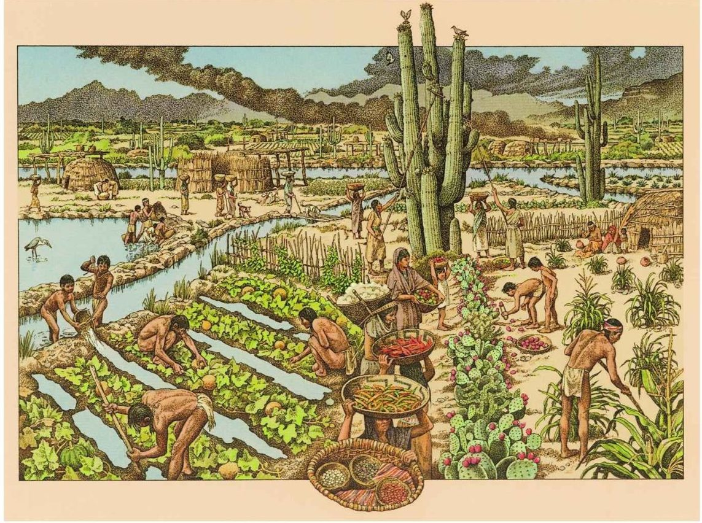

Civilizaciónes de Oasisamerica Civilizaciónes de Oasisamerica
Civilizaciónes de Oasisamerica Civilizaciónes de Oasisamerica
Oasisamérica es una de las áreas culturales que existieron en México mucho antes de la llegada de los conquistadores españoles, y en las que habitaban poblaciones indígenas con sus propias características. Las tres principales áreas culturales de la época prehispánica fueron Oasisamérica, Mesoamérica y Aridoamérica.
De estas tres áreas culturales, Oasisamérica fue la última en formarse, posiblemente en torno al 500 a. C., cuando surgieron en la región sociedades agrícolas y sedentarias con sus propias prácticas culturales. Su nombre proviene de la combinación entre “América” y “oasis”, pues se trataba de una región seca pero con diversas fuentes de agua (como ríos y lagunas), localizada entre dos cadenas montañosas que la separaban de planicies áridas y desérticas. Por esta razón, las poblaciones oasisamericanas pudieron incorporar técnicas agrícolas mesoamericanas que las distinguieron de la vida nómada y de las condiciones de mayor aridez de las poblaciones aridoamericanas.
Oasisamérica se ubicaba en un área que comprendía el noroeste del actual México y el sudoeste del actual Estados Unidos. Sus principales culturas fueron la anasazi, la hohokam y la mogollón. Esta última dejó un importante sitio arqueológico, conocido como Paquimé o Casas Grandes, que tuvo su esplendor entre los años 1205 y 1261, y fue abandonado en 1340, aunque algunos historiadores sitúan su final en 1450.
